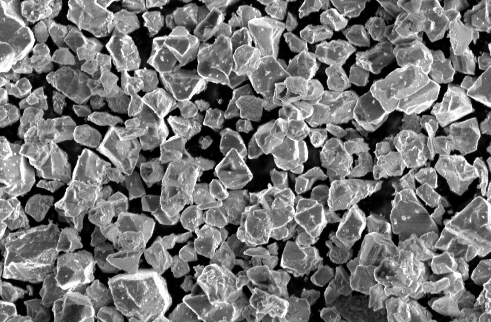

01 · Materials design01 · 소재 설계
High-energy next-generation cathodes고에너지 차세대 양극재
We design high-capacity, low-cost cathodes that span lithium and sodium chemistries, controlling composition, crystal structure and interfaces as one integrated system.리튬과 소듐 화학을 아우르는 고용량·저원가 양극재를 설계하고, 조성부터 결정 구조와 계면까지 통합 제어합니다.
- High-Ni layered oxides — higher capacity in Ni-rich NCM/NCMA through single-crystal design and surface stabilisation.High-Ni 층상계 — Ni-rich NCM/NCMA의 고용량화와 단결정·표면 안정화.
- High-Mn, Co-free layered oxides — suppressing voltage fade and gas evolution in Li/Mn-rich and high-Mn compositions.High-Mn·Co-free 층상계 — Li/Mn-rich 및 고망간 조성의 전압 저하와 가스 발생 억제.
- Na-ion cathodes — controlling phase transitions and low-/high-temperature behaviour of O3-type NFM and NFPP.소듐이온전지 양극재 — O3-type NFM과 NFPP의 상전이 및 저온·고온 거동 제어.
- Polyanion cathodes — particle architecture and carbon-network optimisation for LFP and NFPP.Polyanion 양극재 — LFP·NFPP의 입자 구조와 탄소 네트워크 최적화.
High-NiHigh-MnCo-freeNFM / NFPPLFP
Adv. Mater. 2020, 32, 2003040 · Adv. Sci. 2020, 7, 1902844 · Energy Storage Mater. 2025, 81, 104470
